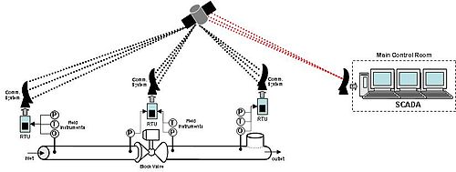

Integration into a IoT system
Object detection with detectNet
We're are working in object detection, and finding where in the frame various objects are located by extracting their bounding boxes. Unlike image classification, object detection networks are capable of detecting many different objects per frame.

The detectNet object accepts an image as input, and outputs a list of coordinates of the detected bounding boxes along with their classes and confidence values.
Source Listing
That's it! For completness, here's the full source of the Python script that we just created:
import jetson.inference
import jetson.utils
net = jetson.inference.detectNet("ssd-mobilenet-v2", threshold=0.5)
camera = jetson.utils.videoSource("csi://0") # '/dev/video0' for V4L2
display = jetson.utils.videoOutput("display://0") # 'my_video.mp4' for file
while display.IsStreaming():
img = camera.Capture()
detections = net.Detect(img)
display.Render(img)
display.SetStatus("Object Detection | Network {:.0f} FPS".format(net.GetNetworkFPS()))
Note that this version assumes you are using a MIPI CSI camera.
Running the Program
To run the application we just coded, simply launch it from a terminal with the Python interpreter:
$ python3 my-detection.py
MQTT
MQTT comes from MQ Telemetry Transport * Publish-subscribe based messaging protocol * Implemented over TCP/IP * Designed for remote connections with low bandwidth requirements * Initially developed by IBM
History
Andy Stanford-Clark (IBM) and Arlen Nipper (then working for Eurotech, Inc.) authored the first version of the protocol in 1999. It was used to monitor oil pipelines within the SCADA industrial control system. The goal was to have a protocol that is bandwidth-efficient, lightweight and uses little battery power, because the devices were connected via satellite link which, at that time, was extremely expensive.

How MQTT works
- Simile ~ Postal Mail System
- Message sent by sender (publisher) through the centralized system: Post Office (broker)
- Postal Mail sends it to the address (subscriber)
- The publisher and subscriber are autonomous (unlike the HTTP Client-Server system)
- The theme or topic is a point the publishers connect to. Acts as the distribution center
- The topics are simple and hierarchical

MQTT Topics
In MQTT, the word topic refers to an UTF-8 string that the broker uses to filter messages for each connected client. The topic consists of one or more topic levels. Each topic level is separated by a forward slash (topic level separator).

MQTT Message
Message consists of 3 parts: * Fixed header: 2 bytes and it is mandatory to send in all messages. * Variable header: 4 bits and is not required in messages. * Message or payload (payload). Maximum of 256 Mbits although in real implementations, the maximum 2-4 kB.
Mosquitto
Mosquitto is an open source (EPL/EDL licensed) message broker that implements the MQTT protocol.
There is a package previously build in the Jetson-Nano to test the Mosquitto implementation and the check how MQTT protocol is working. Follow the next steps to find out how MQTT works:
- 1 Install Mosquitto Clients on the Jetson-Nano
nano@jetson-nano:~$ sudo apt-get install mosquitto-clients
Reading package lists... Done
Building dependency tree
Reading state information... Done
The following additional packages will be installed:
libc-ares2 libmosquitto1
The following NEW packages will be installed:
libc-ares2 libmosquitto1 mosquitto-clients
0 upgraded, 3 newly installed, 0 to remove and 31 not upgraded.
Need to get 91,9 kB of archives.
After this operation, 337 kB of additional disk space will be used.
Do you want to continue? [Y/n] Y
- 2 Init subscriptor with
mosquitto_sub -h BROKER -t TOPICwhere BROKER corresponds to broker address and TOPIC the topic to be subscrited
nano@jetson-nano:~$ mosquitto_sub -h BROKER -t TOPIC
- 3 Now you are ready to publish a message in the broker with
mosquitto_pub -h BROKER -t TOPIC -m MSG, where BROKER corresponds to broker IP address, TOPIC the topic to be subscrited, and MSG the message or payload to be sent to the broker
MQTT client in Python
There is an API to use the MQTT protocol in python, to be integrated with the previous development performed as object detection application. Please note, that some Paho MQTT client library should be installed in your Jetson-Nano board:
root@jetson-nano:/jetson-inference# pip3 install paho-mqtt
Collecting paho-mqtt
Downloading https://files.pythonhosted.org/packages/f8/dd/4b75dcba025f8647bc9862ac17299e0d7d12d3beadbf026d8c8d74215c12/paho-mqtt-1.6.1.tar.gz (99kB)
100% |################################| 102kB 1.6MB/s
Building wheels for collected packages: paho-mqtt
Running setup.py bdist_wheel for paho-mqtt ... done
Stored in directory: /root/.cache/pip/wheels/b7/18/24/b9f50d4ff75478d9ccb373bcaa454fc1573cdd39fbad37f49e
Successfully built paho-mqtt
Installing collected packages: paho-mqtt
Successfully installed paho-mqtt-1.6.1
Publish a message
This code provides a client class which enable applications to connect to an MQTT broker to publish messages. It also provides some helper functions to make publishing one off messages to an MQTT server very straightforward.
You can use the client class as an instance, within a class or by subclassing.
Example
- The general usage flow is as follows:
- Create a client instance with
mqtt.Client - Connect to a broker using one of the
connect*()functions. Note that the Broker address corresponds to broker_address variable - Call one of the
loop*()functions to maintain network traffic flow with the broker - Use
publish()to publish messages to the broker. Note that the TOPIC is refer as "house/bulbs/bulb1" and the payload as "ON"
- Create a client instance with
import paho.mqtt.client as mqtt
import time
############
def on_message(client, userdata, message):
print("message received " ,str(message.payload.decode("utf-8")))
print("message topic=",message.topic)
print("message qos=",message.qos)
print("message retain flag=",message.retain)
########################################
broker_address="test.mosquitto.org"
print("creating new instance")
client = mqtt.Client("P1") #create new instance
client.on_message=on_message #attach function to callback
print("connecting to broker")
client.connect(broker_address) #connect to broker
client.loop_start() #start the loop
print("Publishing message to topic","house/bulbs/bulb1")
client.publish("house/bulbs/bulb1","ON")
time.sleep(4) # wait
client.loop_stop() #stop the loop
Assignment: system that counts people crossing the entry or exit like in the photo and send information through MQTT
Modify the code my-detection.py developed adding the functionality of sending the number of people that are entering to an area every 10 seconds. Note that your application should publish in the topic "shopping/cameraID/people_count/". Each node should implement the people counter and publish in the corresponding topic, that is, group 1 would have the topic "shopping/camera1/people_count/" assigned.